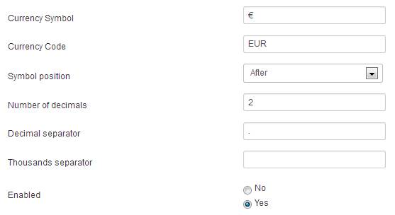

You can create a currency by clicking on the "Currencies" tab in Invoicing. As for taxes this is the only view where you can create or edit a currency.
Just look at the screen below. Just notice that the currency will be displayed as CODE (SYMBOL) wherever it's displayed.
